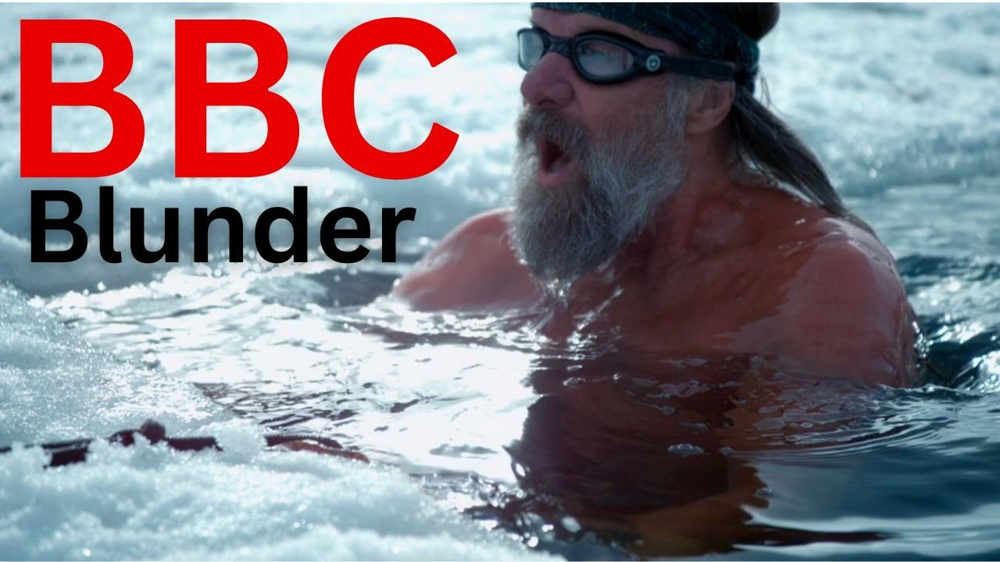
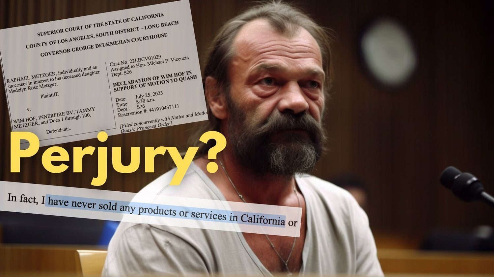

In this week's video I talk with Patrick Mckeown, the best selling author of The Oxygen Advantage and The Breathing Cure about looming problems in the broader breathwork community as a global movement headed up by charismatic breathing leaders gains in popularity. Mckeown has studied the Buteyko method for 21 years and worries that some of the more dramatic breathing practices can lead to serious consequences. Lest it go without saying, not every breathing practice is right for every person. Sometimes you need to experiment with several options before you find the one that's right for you.
In Case you Missed it

Wim Hof's BBC Disaster, Outside Mag and Enahm's Insane Attack
In a recent YouTue Live find more footage of Wim Hof teaching water-hyperventilation, analyze the recent piece in Outside Magazine about the WHM and highlight Enahm Hof's recent suggestion that I'm a sex maniac.

Wim Hof's Strange Court Declaration
Last Monday Innerfire and Wim Hof made several strange statements in a court filing in California that look a LOT like perjury when they claimed to have never sold products in California and have no business or personal relationships with WHM instructors. Sorry about the bad audio. This was my first YouTube live in a while.